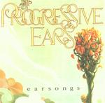

| Artist: | Progressive Ears |
| Title: | Earsongs |
| Label: | independent |
| Length(s): | 68 minutes |
| Year(s) of release: | 2001 |
| Month of review: | [04/2002] |
| 1) | The Red Masque - Tidal | 10.38 |
| 2) | Scott Mosher - Re-define | 6.28 |
| 3) | Menayeri - Tiempo De Volver | 7.46 |
| 4) | Mindworm - Trolley | 5.55 |
| 5) | John Curtis - Get Thee Behind Me, Santa | 1.48 |
| 6) | Lyle Holdahl - Labyrinth Suite | 9.25 |
| 7) | Phil McKenna (aka Prog Owl) - A Gift Unopened | 8.12 |
| 8) | Random - Castaway | 4.23 |
| 9) | Eric Kampman - The Desert | 12.44 |
| 10) | Notallwhowander & John Curtis - Kirchenrahmen | 1.05 |
Scott Mosher's is a song very much like a Rush track, structure of the track, the instrumentation, the voice of the singer (presumably Scott), all very alike but just a little less sharp and a bit more poppy than in the original.
Tiempo De Volver is a typically South-American prog song. Pretty nice track, except that are too many breaks, creating a somewhat chaotic end result.
Trolley is a vocal track with deliberate bass and quick keys, a la Genesis's The Lamb. The vocals seem distorted in some way, making them sound hissy. The second part is piano based, slowly moving towards guitar, until the quick keys return to the fore. This moves into a more forcing (not forceful, in some way) part, moving towards a sprakling climax. Like it.
Get Thee Behind Me, Santa is a rather abstract track, in a not completely unlike solo Kit Watkins way, but since it's not all that long, not too disturbing. Wouldn't call it an asset, though.
Labyrinth Suite opens in a sweet, almost fragile way, so the wall of sound comes not fully expectedly. It's welcome, though. The blend of progressive music with some purely melodic influences somewhat reminds me of Irrwisch, which is helped by the nasal vocals. A bridge takes the track suite into its second part, featuring spoken-sung lyrics. The Irrwisch association has gone now, replaced by a tentative Lamb-era Genesis. The third and final part is mainly electronic, and a somewhat disappointing end to this otherwise good suite. Literally translated from Dutch we would say 'it extinguishes as a night candle'.
A Gift Unopened starts a bit doubtingly, to settle into a majestic sounding electronic experimentalism, very reminiscent of Present. Now there's something I like. As the track progresses, the Present reference diminishes, but without hurting the quality.
Castaway is a bit more of a slow pop song, by which I definitely don't mean to disqualify it. The slow build up and nice solo make this into a good track, still, it's different from the other material on this disc.
The Desert starts as what sounds like an electronic track, but after some minutes turns out to be a vocal track. Eric's voice is somewhat like Christopher Cross's, both in sound as well as in a somewhat whining quality. Along with the sharpness of the keyboards and a certain lack of direction, which doesn't appear to be experimentalism, this a track I don't much care for.
Kirchenrahmen is a sort up tempo Caravan track, with quick alternations of silly poppiness and a more melodic side. As far as there's time for all that in 65 seconds.
This album can be ordered through the Progressive Ears website, at www.progressiveears.com